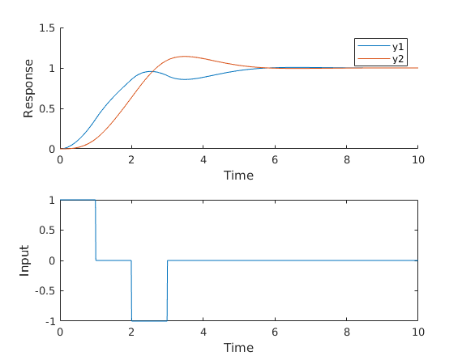

Contents
Marion Anderson ECE 4550 Fall 2018 HW 2.2
Setup
clear; clc; close all M1 = 1; M2 = 1; Kc = 1; Dc = 1; % init cond & state-space x0 = zeros(4, 1); A = [0 0 1 0; 0 0 0 1; -Kc/M1 Kc/M1 -Dc/M1 Dc/M1; Kc/M2 -Kc/M2 Dc/M2 -Dc/M2]; B = [0; 0; 1/M1; 0]; C = [1 0 0 0; 0 1 0 0];
Solving
h = 0.01; times = 0:h:10; % memory alloc x = zeros(4, length(times)); u = zeros(1, length(times)); y = zeros(2, length(times)); x(:, 1) = x0; % don't forget init conds! y(:, 1) = C * x(:, 1); u(1) = 1; for i = 2:length(times) t = times(i); if t < 1 u(i) = 1; elseif t < 2 u(i) = 0; elseif t < 3 u(i) = -1; else u(i) = 0; end xdot = A*x(:, i-1) + B*u(i-1); x(:, i) = x(:, i-1) + xdot*h; y(:, i) = C * x(:, i); end
Plotting
subplot(2, 1, 1) hold on plot(times, y(1, :)) plot(times, y(2, :)) xlabel 'Time' ylabel 'Response' legend('y1', 'y2') subplot(2, 1, 2) plot(times, u) xlabel 'Time' ylabel 'Input'